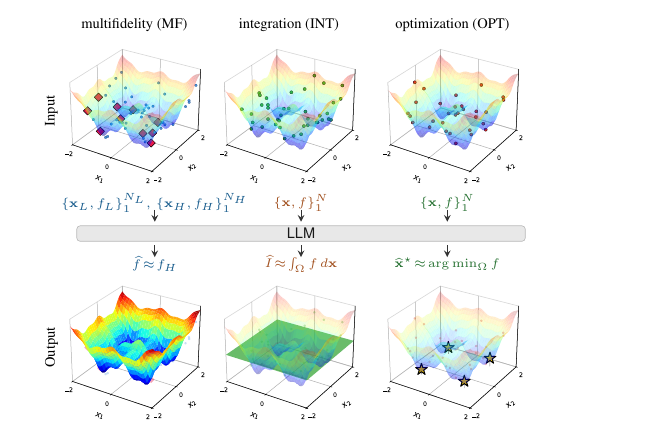
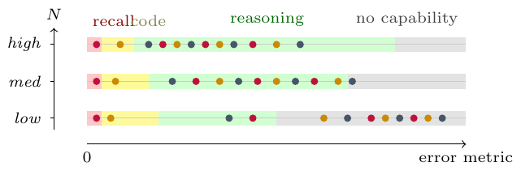
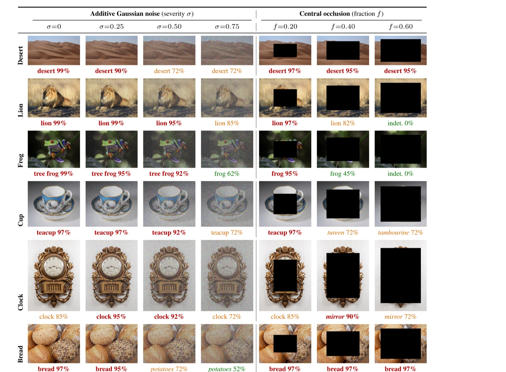
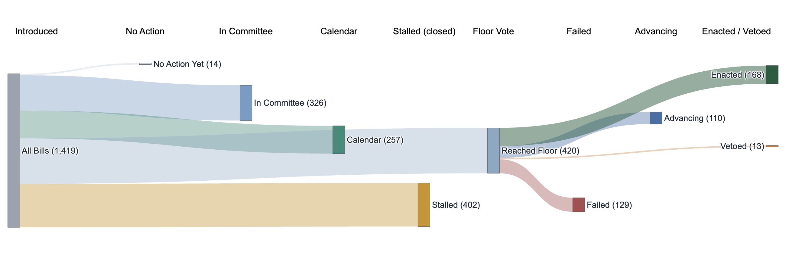
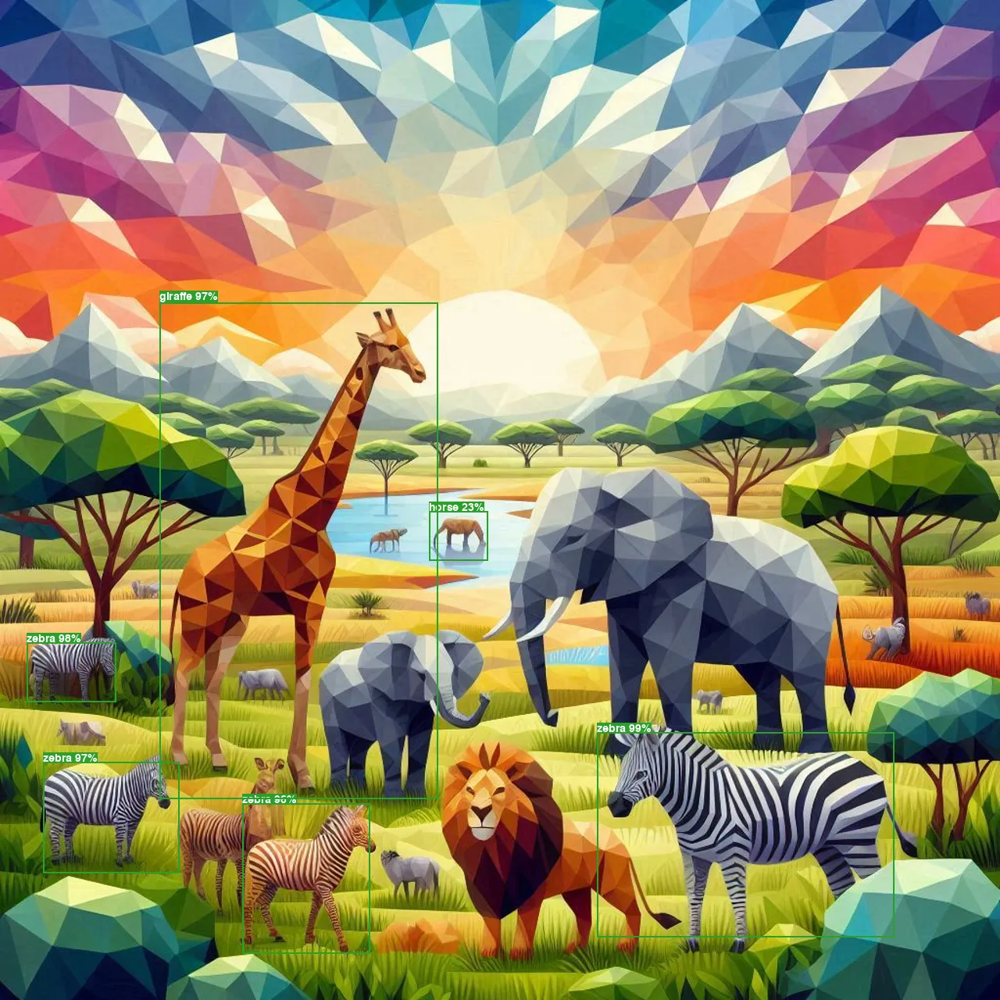
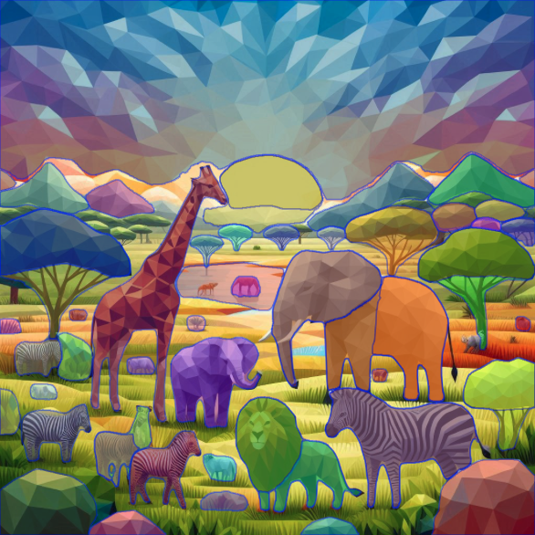
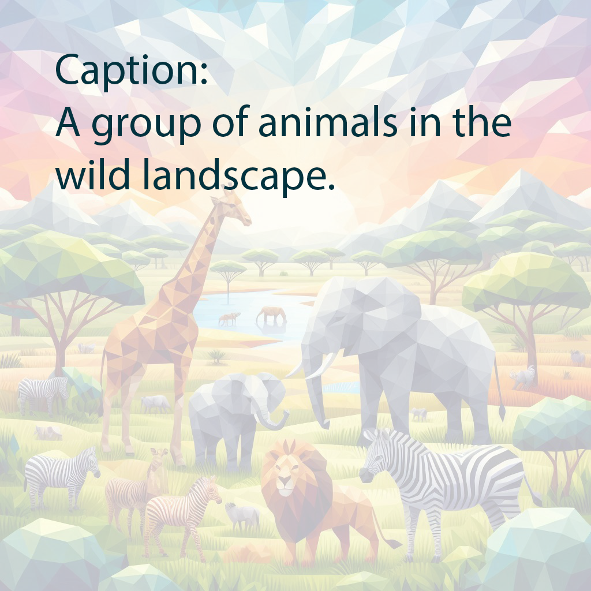
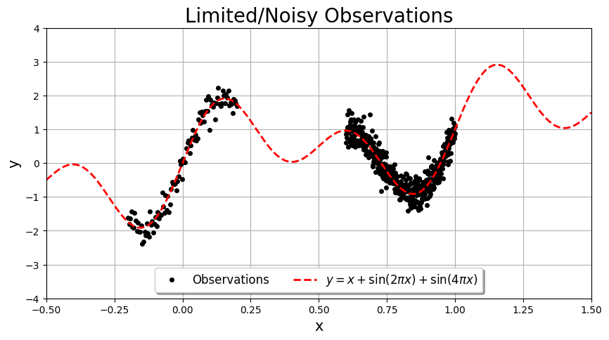
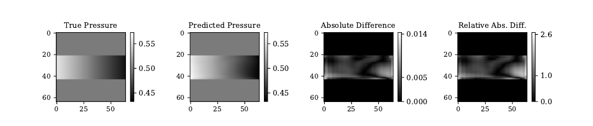
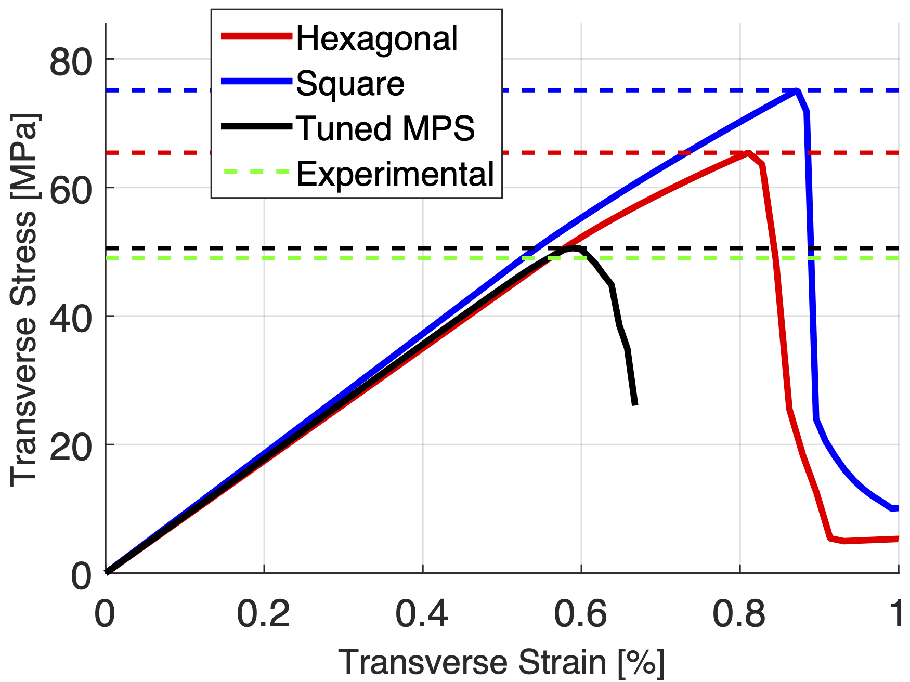

Selected research projects. For projects without linked papers, more details can be shared on request.
Recent work stress-testing large language and vision-language models — whether they genuinely reason about numerical functions or merely recall, and whether a model's stated confidence stays warranted as its perceptual evidence degrades.
Reasoning or recall? A blind protocol hides the identity of a function and asks LLMs to predict, integrate, and optimize it from sampled points alone — separating genuine numerical reasoning from memorized recall.


Confidence as testimony. As perceptual evidence decays under noise and occlusion, a faithful model should lose confidence — yet some confabulate a confident, wrong class instead.

Where regulation meets the pace of AI — measuring how governance actually works, and where it stalls.
Bridging AI development and regulation. Only 4.23% of U.S. AI bills (2017–2025) reach a terminal outcome; a position paper argues for adaptive, anticipatory legislation with independent oversight. position paper

A library of high-dimensional test functions for optimization, uncertainty quantification, and numerical integration problems.
Quantifying uncertainty in AI/ML predictive estimates, decomposing it into aleatoric and epistemic components, and using it to guide active learning. Applications across vision, image classification, regression, and time-series.
Vision. Uncertainty in object detection, segmentation, and image generation/captioning workflows.



Image classification. Accuracy & uncertainty impact of rotation and AWGN on NN classifiers (MNIST / CIFAR).
1-d regression. Uncertainty bands with deep ensembles, MC dropout, and conformal prediction over limited noisy observations.

Multifidelity fusion. Convolutional encoder/decoder networks that fuse many cheap low-fidelity samples with a few expensive high-fidelity ones to reconstruct full fields and their predictive uncertainty.

Leveraging Voronoi diagrams and Delaunay graphs for global surrogate modeling in high-dimensional UQ and adaptive sampling under limited sample budgets (multifidelity / costly / high-stakes simulations).
Creating and tuning 2-d / 3-d meshes with guaranteed quality properties.
Feature extraction (e.g., period-3 in DNA), object localization (e.g., echoes in ultrasound), and spectral analysis of high-d sampling techniques via Nd-FFT.
Extending mesh-tuning methods (e.g., non-obtuse triangulation, paper) to model fiber-reinforced polymers for elastic & failure simulations; and ML for collision detection and motion planning.
